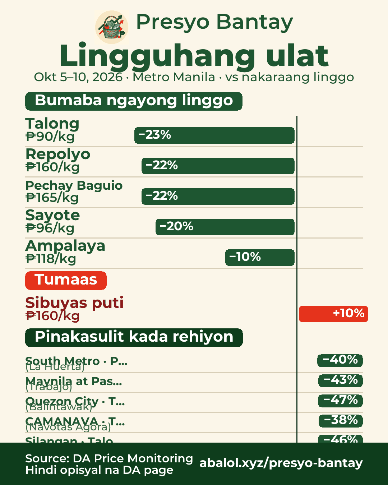

Okt 5–10, 2026Oct 5–10, 202610/5〜10/10
Lingguhang ulatWeekly report週間レポート
% = average ngayong linggo vs nakaraang linggo; area deals vs usual na presyo (30 araw)% = this week vs last week average; area deals vs 30-day usual price% = 今週と先週の平均比；地域別は30日間のいつもの価格比

🗓️ Lingguhang ulat — Okt 5–10, 2026
📉 Bumaba ngayong linggo (buong Metro Manila, vs nakaraang linggo):
- Talong ₱90/kg (−23%)
- Repolyo ₱160/kg (−22%)
- Pechay Baguio ₱165/kg (−22%)
- Sayote ₱96/kg (−20%)
- Ampalaya ₱118/kg (−10%)
📈 Tumaas:
- Sibuyas puti ₱160/kg (+10%)
🏪 Pinakasulit kada rehiyon (vs usual na presyo):
- South Metro: Pechay Baguio · La Huerta (−40%), Sayote · Alabang (−39%)
- Maynila at Pasay: Ampalaya · Trabajo (−43%), Pechay Baguio · Paco (−38%)
- Quezon City: Talong · Balintawak (−47%), Ampalaya · Mega Q-mart (−35%)
- CAMANAVA: Talong · Navotas Agora (−38%), Pechay Baguio · Maypajo (−38%)
- Silangan: Talong · Parang (−46%), Ampalaya · Parang (−40%)
🇬🇧 Weekly report — Oct 5–10, 2026
📉 Down vs last week (Metro Manila avg): Eggplant ₱90 (−23%), Cabbage ₱160 (−22%), Pechay Baguio ₱165 (−22%), Chayote ₱96 (−20%), Ampalaya ₱118 (−10%)
📈 Up: White onion ₱160 (+10%)
🏪 Best deals by area: South Metro — Pechay Baguio at La Huerta (−40%), Chayote at Alabang (−39%); Manila & Pasay — Ampalaya at Trabajo (−43%), Pechay Baguio at Paco (−38%); Quezon City — Eggplant at Balintawak (−47%), Ampalaya at Mega Q-mart (−35%); North (CAMANAVA) — Eggplant at Navotas Agora (−38%), Pechay Baguio at Maypajo (−38%); East Metro — Eggplant at Parang (−46%), Ampalaya at Parang (−40%)
🇯🇵 週間レポート — 10/5〜10/10
📉 先週比の値下がり（マニラ首都圏平均）：ナス ₱90（−23%）、キャベツ ₱160（−22%）、ペチャイ・バギオ ₱165（−22%）、サヨテ ₱96（−20%）、ゴーヤ ₱118（−10%）
📈 値上がり：白玉ねぎ ₱160（+10%）
🏪 地域別お買い得：南部 ペチャイ・バギオ −40%（La Huerta）、サヨテ −39%（Alabang）；マニラ・パサイ ゴーヤ −43%（Trabajo）、ペチャイ・バギオ −38%（Paco）；ケソン市 ナス −47%（Balintawak）、ゴーヤ −35%（Mega Q-mart）；北部 ナス −38%（Navotas Agora）、ペチャイ・バギオ −38%（Maypajo）；東部 ナス −46%（Parang）、ゴーヤ −40%（Parang）
Ulat kada araw ngayong linggoDaily reports this week今週の日別レポート